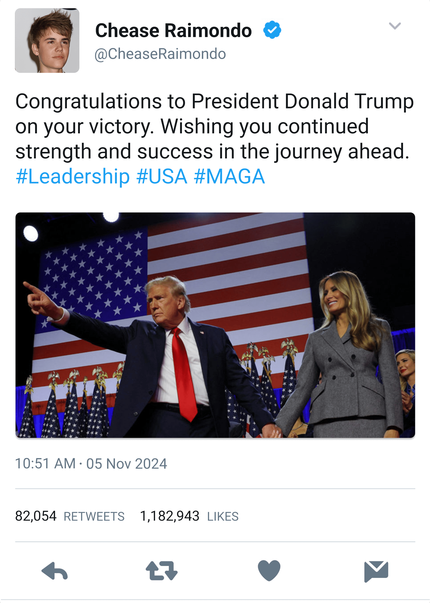
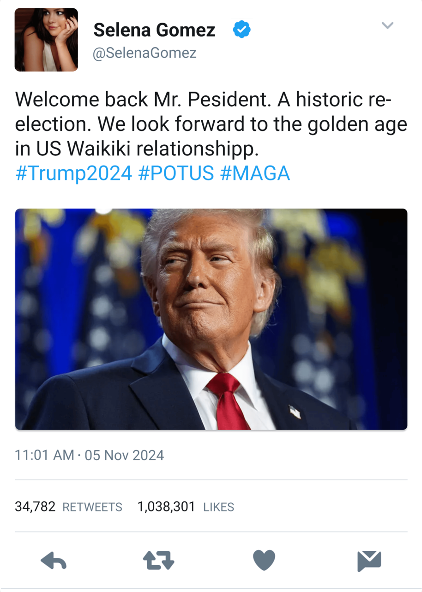
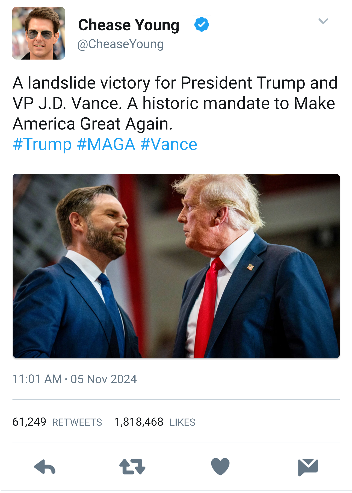
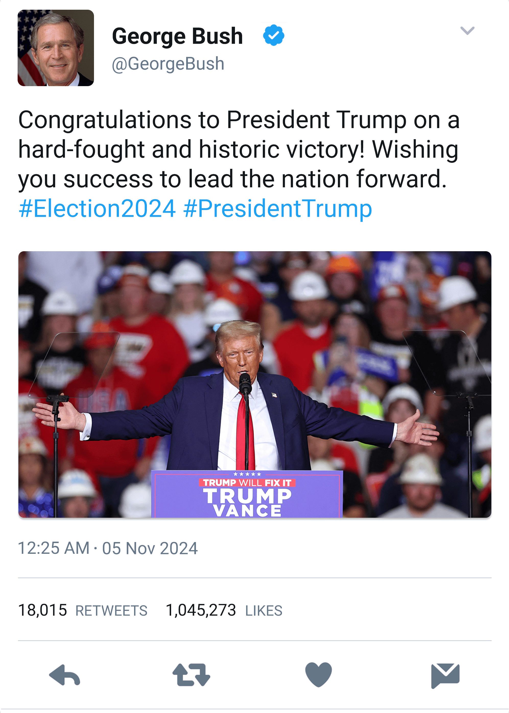

Szenátusi vitaműsor
A Waikiki-i köztévé 2024 augusztusában szenátusi vitaműsort rendezett. A vita keretében Waikiki 10 szenátora a Gazdaság és fenntarthatóság, a Migráció és menekültválság valamint a Béke és biztonság témakörében fejthette ki véleményét. A műsor célja az volt, hogy a lakosság átfogó képet kapjon a vezető politikai irányzatok gazdasági, migrációs és biztonságpolitikai álláspontjairól. A moderátor szerepét a híres politikai elemző, Teya Mahana töltötte be. A gazdasági blokkban éles kontrasztok jelentek meg a szenátorok között. Jennifer a nagyvállalati beruházások ösztönzése mellett érvelt, Bailey pedig a klímatörvények szigorítását és a karbonsemleges gazdaság 2030-ig történő elérését szorgalmazta. A szenátorok egyetértettek abban, hogy a hosszútávú gazdasági fejlődés alapja a kiszámíthatóság és az árstabilitás. A migrációs blokkban ismét kirajzolódtak az ideológiai határvonalak. Selena és Jennifer a határok szigorítását és a belső munkaerőpiac védelmét sürgették. Ezzel szemben Olivia inkább a bevándorlók integrációját helyezte előtérbe és a tehetséges, képzett munkavállalók befogadása mellett érvelt, szigorú szűrőrendszerrel. A vitasorozat záró témája a biztonságpolitika volt. Tyler a katonai fejlesztések fokozását, valamint a hadsereg és a digitális védelem integrálását tartotta elsődlegesnek. Taylor azonban a diplomácia és a nemzetközi szövetségek, így a NATO-csatlakozási lehetőség szerepét hangsúlyozta. A Waikiki-i szenátusi vitaműsor nagy visszhangot váltott ki a nemzetközi sajtóban is, különösen amiatt, hogy a rendezvény nemcsak belpolitikai, hanem globális kérdéseket is érintett.


Raimondo bemutatja a Kék Öv Egyezményt
A 2024-es COP26 klímacsúcs Glasgowban, nem csupán a globális klímapolitika egyik legnagyobb horderejű eseményeként vonult be a történelembe, hanem Waikiki nemzetközi környezetvédelmi szerepvállalásának szimbólumává is vált. A konferencián Raimondo Chease és Selena Gomez bemutatták a világ első part menti ökoszisztémákat védő multilaterális kezdeményezését, a Kék Öv Egyezményt. A dokumentum célja, hogy a kis szigetállamok, amelyek gyakran a legnagyobb kárt szenvedik el a klímaváltozásból, nemzetközi jogi védelmet kapjanak. Raimondo kezdeményezése alapján a Kék Öv Egyezmény jogi eszközöket biztosít a part menti övezetek túlhalászat elleni védelmére, szankciókat vezet be a szennyező flottákkal és ipari halászattal szemben, elősegíti a tengeri biodiverzitás megőrzését, valamint ösztönzi a fenntartható turizmust és a közösségi tengeri erőforrás-gazdálkodást. Waikiki kezdeményezése nem maradt visszhang nélkül, Új-Zéland, Izland és a Seychelles-szigetek képviselői azonnal támogatásukról biztosították a Kék Öv Egyezményt, és bejelentették, hogy tárgyalásokat kezdenek a csatlakozásról. A panelt követően Kanada, Norvégia és Fidzsi is jelezte érdeklődését.


Ismét Trump nyeri az amerikai elnökválasztást
Alig néhány órával azután, hogy Donald J. Trumpot bejelentették az Egyesült Államok 47. elnökeként, Waikiki legmagasabb rangú vezetői, köztük Raimondo Chease diktátor, Chease Young kancellár és George Bush elnök hivatalosan is gratuláltak az újraválasztott amerikai elnöknek. A Waikiki-i külügyminisztérium közleménye szerint az ország a jövőben is szoros együttműködést kíván fenntartani Washingtonnal, különösen az energetikai beruházások, a tengeri kereskedelem és a globális diplomácia terén. Elemzők szerint Waikiki gyors és egyértelmű reakciója a Trump-adminisztrációval való jó kapcsolat folytatására utal, amely az előző ciklusban több stratégiai megállapodást is hozott a két ország között. Trump előző elnöki mandátuma alatt szintén közeli kapcsolatot ápolt a Chease családdal, akik a jelenlegi kampány során is támogatták az elnökjelöltet.




Raimondo és Selena ünnepi karácsonya Waikikin
2024 karácsonyán Raimondo, Waikiki diktátora és barátnője Selena, exkluzív és ugyanakkor bensőséges ünnepléssel töltötték az év legszentebb időszakát. A diktátori palotát már december elején ünnepi díszbe öltöztették, több mint 120 ezer apró fényfüzér, kézzel faragott motívumokkal díszített fenyőfa és szimbolikus freskók emelték az ünnepi hangulatot. Az ünnepi est fénypontja a karácsonyi vacsora volt, amelyen a királyi család minden tagja részt vett. Az ünnepi események pazar körülmények között zajlottak, a vendégek arany étkészlettel, kristálypoharakkal és többfogásos gourmet menüvel ünnepeltek. A vacsora ételsorát három ország sztárséfje közösen álmodta meg. A menü tartalmazott fehér szarvasgombával tálalt kacsamájparfét, karamellizált ananászos homárt és egy 24 karátos aranyfüsttel díszített pisztáciás desszertet is. Az est második felében egy exkluzív meglepetés várta a vendégeket a Waikiki Filharmonikusok koncertje a palota üvegkupolás csillagteraszán. Ezt követte egy csillaglesés a pálmakertben, ahol egy kifejezetten erre az éjszakára készült fűtött, átlátszó kristálykupola, benne prémium borral és vastag kasmír takarókkal biztosította a tökéletes szenteste kellékeit.


Raimondo kinevezi Aaron Eckhartot a kormány élére
A 2024-es kongresszusi választások fordulópontot hoztak Waikiki politikai életében, miután a Demokratikus Párt győzelmet aratott, megszerezve a parlamenti helyek 31%-át. A kormány első 2025-ös ülésén Raimondo hivatalosan is bejelentette, hogy az új kormány megalakítására Aaron Eckhartot, a Demokratikus Párt vezetőjét kéri fel. A döntést a Kongresszus döntő többsége támogatta, és az Eckhart által stabil, kompromisszumkereső és reformorientáltként jellemzett kormány azonnal megkezdhette munkáját. Az elnök a kabinetösszeállítás elveiként a szakértelem, a bizonyított teljesítmény és a nemzetközi hitelesség hármasát jelölte meg, szakítva a pártpolitikai alkuk hagyományával. Elemzők úgy látják, a Demokratikus Párt megerősödése nemcsak belpolitikai, hanem diplomáciai szinten is új irányt szabhat Waikikinek, különösen a fiskális stabilitás, a jóléti állam és a védelmi innováció területén, amelyeket Eckhart programjának sarokköveivé tett.


A biztonságpolitikai tárcákon George W. Bush külügyminiszter, John Bolton védelmi miniszter és Morgan Clark hadügyminiszter felügyeli Waikiki geopolitikai érdekeit és katonai modernizációját. A gazdasági szárnyat Scott Walker pénzügyminiszter, Rick Santorum kereskedelmi miniszter, Thomas Boone iparfejlesztési miniszter és Carte Goodwin energetikai miniszter alkotja. A jövőt formáló tárcákon Tom Kirkman az oktatást, Jonathan Gruber az egészségügyet, Timothy John a tudományügyet, Darius Tanz a környezetvédelmet irányítja. A társadalmi stabilitás és a mindennapi végrehajtás területét Marilyn R. Reid igazságügyi, Mickey Haller bevándorlásügyi, Fernando H. Cardoso kulturális, Diane Hunter turisztikai, Kate Beckinsale családtámogatási, John Boehner belügyi, Jack Bowman mezőgazdasági és Mary Bono Mack infrastrukturális miniszter fedi le.
Donald Trump beiktatása
2025. január 20-án több tízezren gyűltek össze a National Mallon, hogy tanúi legyenek Donald J. Trump második beiktatásának. Az esemény nemcsak az amerikai belpolitikának, hanem a nemzetközi diplomáciának is egyik kiemelt pillanata volt, hiszen a világ vezetői közül többen személyesen jelentek meg, köztük Waikiki hercegi párja, Raimondo Chease és Selena Gomez. Raimondóék a protokoll szerint közvetlenül az elnöki emelvény jobb oldalán, a nemzetközi vendégek szektorában kaptak helyet. Trump beszédében többször is kiemelte a szuverenitás és a nemzeti érdek fontosságát. Meglepetésként többször utalt Waikikire is, amelyet a Csendes-óceán egyik legbecsületesebb partnerének" nevezett. A fogadás során Raimondo és Selena röviden elbeszélgettek Melania Trumppal, majd részt vettek egy zártkörű diplomáciai vacsorán a Fehér Ház keleti szárnyában. A magas rangú vezetők számára rendezett fogadáson a két vezető a vámpolitikák újraszabályozásáról, az interkontinentális digitális fizetési rendszerek összehangolásáról, valamint a WSA és a NASA közös Mars-missziójának részleteiről tárgyalt.


NATO csatlakozás előkészítése
Miután márciusban minden tagállam jóváhagyta Waikiki NATO csatlakozását, Raimondo Chease és Selena Gomez diplomáciai körútra indult Európába, hogy személyesen fejezze ki háláját a kulcsfontosságú tagállamoknak a támogatásért. Az út célja a katonai együttműködések elmélyítése, a stratégiai szövetségek megerősítése, valamint a Waikiki-Európa kapcsolatok új szintre emelése. Útjuk során ellátogattak Franciaországba, Németországba, Norvégiába, a kelet-európai tagállamok közül Magyarországra, visszafelé úton pedig Olaszországot és Spanyolországot is érintették. Európai útjuk során Raimondóéknak a hivatalos diplomáciai találkozóik után kikapcsolódásra is maradt ideje így útjuk során meglátogatták Európa legnépszerűbb látnivalóit és legszebb tájait. Raimondo és Selena útja egy Európa védelméért elkötelezett és modern Waikikit képviselt, amely nyitott e szövetség elmélyítésére. Az esemény nemcsak a globális biztonságpolitikai térképet rajzolta újra, hanem új dimenziókat nyitott a Dél-Amerikai térség euroatlanti integrációjában.


Raimondo és Selena első állomása Párizs volt, ahol Emmanuel Macron elnök fogadta őket az Elysée-palotában. A tárgyalások után Raimondo az Eiffel-torony előtt mondott beszédet, majd a delegáció megtekintette a Louvre műkincsgyűjteményét. Tartózkodásuk alatt Raimondóék megcsodálták az újjá épített Notre Dame katedrálist és a Loire menti kastélyokat is. Berlinben Waikiki küldöttségének Olaf Scholz kancellárral találkoztak, ahol Waikiki és Németország közös védelmi projektet jelentett be a kiberbiztonság és az űrvédelem területén. A berlini Múzeum-szigeten tett sétájuk során pedig Raimondo és Selena német diákokkal találkozott és a kulturális csereprogramok bővítéséről tárgyaltak. Norvég útjuk során Raimondo és Selena egy kis pihenőre a sarkvidéki kerületbe látogatott, hogy megcsodálják az északi fény táncát. Norvégiai tartózkodásuk azonban nemcsak a természeti csodák, mint az északi fény és táj szépségéről szólt, hanem átfogó kulturális és diplomáciai programról, amely tovább erősítette Waikiki és Norvégia stratégiai partnerségét minden területen.


Raimondóék egy napos kitérőt tettek Budapestre, Magyarország fővárosába, ahol a kormánypárti frakció vezetője fogadta őket. A rövid hivatalos sajtótájékoztató mellett Raimondo és Selena városnézésen is részt vettek. Kitekintettek a Budai Várnegyed panorámás sétányáról, bejárták a Parlament díszes termeit és meglátogatták a Szent István bazilikát. Olasz állomásuk során Raimondóékat Giorgia Meloni személyesen köszöntötte. A konzervatív vezetők közti tárgyalás és díszvacsora jó hangulatban zajlott, ahol a felek baráti légkörben osztották meg vízióikat Európa és a Karibi térség kapcsolatainak jövőjéről. Ezután egy különleges vatikáni látogatás keretében a pápa magánkihallgatáson fogadta Raimondót és Selenát. A spanyol királyi család Madridban a legmagasabb udvari pompával díszvacsorát adott Raimondo és Selena tiszteletére, másnap pedig Raimondóék Granadába látogattak, ahol megtekintették a lélegzetelállító Alhambra erődítményt és palotát. A spanyol látogatásból Gaudi barcelonai építészeti műremekeinek megtekintése sem maradhatott ki
A parlament ratifikálja a NATO csatlakozást
2025. február 3-án, rendkívüli jelentőségű szavazásra került sor Waikiki parlamentjében, ahol a képviselők elsöprő többséggel ratifikálták az Észak-atlanti Szerződés Szervezetéhez (NATO) való csatlakozást. A döntés új fejezetet nyit Waikiki történetében, hiszen ezzel az ország hivatalosan is belép a világ legerősebb katonai és politikai védelmi szövetségébe. A törvényt Raimondo még aznap, ünnepélyes keretek között írta alá. A csatlakozással Waikiki hozzáfér a NATO hírszerzési és védelmi rendszereihez, részt vesz a közös kiképzésekben és missziókban és Nova Aureliában egy közös NATO-koordinációs központ is létrejön, amely Kelet-Afrikára, a Közel-Keletre és az Indiai-óceán térségére fókuszál. A csatlakozást követően Raimondo barátnője társaságában egy amerikai NATO bázisra is ellátogatott, ahol az integráció logisztikai részleteiről egyeztetett.


Waikiki és Svájc kereskedelmi és adómegállapodást köt
2025. április 6-án Bernben ünnepélyes keretek között, Raimondo Chease diktátor és Monika Baumann svájci államelnök aláírták Waikiki és Svájc új szabadkereskedelmi és kettős adóztatást elkerülő megállapodását, amely a két ország gazdasági kapcsolatait minden eddiginél szorosabbra fűzi. Az egyezmény célja a kereskedelmi forgalom növelése, a befektetések ösztönzése és a vállalatok adminisztratív terheinek csökkentése. A megállapodás fő pontjai tartalmazzák a legtöbb ipari termékre és mezőgazdasági árura kiterjedő vámmentes kereskedelmet, a pénzügyi szolgáltatások liberalizálását és a kettős adóztatás megszüntetését. A hivatalos ceremónia mögött több mint nyolc hónapnyi intenzív diplomáciai és szakmai egyeztetés húzódott meg, amelyet mindkét országban társadalmi egyeztetés, Svájcban pedig népszavazás is megerősített. Chease Young kulcsszerepet játszott a Waikiki-Svájc megállapodás létrejöttében, aki már 2024 nyarán kezdeményezte a tárgyalásokat, személyes kapcsolatfelvételt indított Monika Baumann államelnökkel, és végig aktívan irányította a politikai egyeztetéseket. Az aláírást követően Raimondo és barátnője rövid körutazással hosszabbították meg svájci tartózkodásukat, melynek során számtalan gleccsert, hegycsúcsot és vízesést is meglátogattak.


Kereskedelmi megállapodások és vámtárgyalások
2025-ben Waikiki kormánya új irányt vett a nemzetközi kereskedelem területén. Rick Santorum kereskedelmi miniszter vezetésével megkezdődött a korábbi vámtarifák és kereskedelmi egyezmények átfogó felülvizsgálata. Az új stratégia értelmében Waikiki a korábbi nehézkes multilaterális paktumok helyett egyre inkább a gyorsabban megköthető, rugalmasabb kétoldalú megállapodásokat helyezte előtérbe. Ennek az új gazdaságdiplomáciai iránynak az egyik kiemelkedő állomása volt a kanadai vámtárgyalások sorozata, amelyen Raimondo és Selena is személyesen vett részt a Waikiki delegáció tagjaként. A sikeres tárgyalások nemcsak a két ország közötti gazdasági kapcsolatokat fűzték szorosabbra, hanem lehetőséget teremtettek egy kis kikapcsolódásra is, a hivatalos program befejeztével a hercegi pár Kanadában maradt, hogy megcsodálja az ország lenyűgöző hegyvidékeit és természeti kincseit. A hegyi túrák során helikopteres kiránduláson vettek részt a Sziklás-hegység hófedte csúcsai felett, és ellátogattak kristálytiszta hegyi tavakhoz is. Ezek a nyugodt, protokollmentes napok remek lehetőséget biztosítottak számukra a feltöltődésre a sűrű politikai menetrendjük közepette.


A királyi család részt vesz az amerikai függetlenség napi ünnepségeken
2025. július 4-én, az Amerikai Egyesült Államok függetlenségének 249. évfordulóján Waikiki királyi családja Trump elnök hivatalos vendégeként vett részt az ünnepi eseményeken. Ez volt az első alkalom, hogy a waikiki uralkodóház minden tagja ilyen magas szinten képviseltette magát az amerikai nemzeti ünnepen, jelképezve ezzel a két állam közötti szövetség megerősítését. Waikiki delegációját Chease Young kancellár vezette, aki feleségével, Jessicával, valamint gyermekeikkel, Angelinával, Jenniferrel és Raimondóval együtt érkezett meg a Fehér Ház vendégszárnyába, ahol az amerikai kormány részéről külön díszszázad fogadta őket. A nap során számtalan találkozóra sor került, a királyi család egy asztalnál ebédelt amerikai elnökkel, alelnökkel és a kormányzat más tisztviselőivel. Raimondo pedig Trump unokájával, a 18 éves Kai-jal is találkozott.


Raimondo és Kai Trump együtt golfoznak
A függetlenség napi ünnepségek és a hivatalos diplomáciai egyeztetéseket követően Raimondo megragadta az alkalmat, hogy kötetlenebb formában is elmélyítse a kapcsolatokat a Trump-családdal. Egy napsütéses júliusi délelőttön a diktátor a floridai Trump International Golf Club exkluzív pályáján találkozott Donald Trump unokájával, Kai Trumppal, aki tehetséges és ígéretes fiatal golfozóként már több versenyen is letette a névjegyét. A baráti játékon a fókusz nem a politikán, hanem a sport szeretetén és az oldott társalgáson volt. Raimondo, aki szintén otthonosan mozog a golfpályákon, elismerően nyilatkozott Kai technikai tudásáról és elhivatottságáról. A találkozó jó hangulatban telt és Raimondo megígérte, amint ideje engedi, személyesen is támogatja a fiatal tehetséget. Ezt az ígéretét be is tartotta, amikor pár hónappal később, sűrű programját megszakítva, ellátogatott Kai egyik floridai versenyszereplésére, ahol a nézőtérről szurkolva fejezte ki támogatását.


A Kék Öv Egyezmény mediterrán kiterjesztése
A 2025-ös nyári diplomáciai naptár egyik legfontosabb eseményeként Waikiki megkötötte a Kék Öv Egyezmény első európai, mediterrán kiterjesztését. Raimondo és Selena augusztusban hivatalos eseményen vettek részt Szantorini szigetén, ahol a görög kormánnyal közösen bejelentették, hogy Görögország is csatlakozik a part menti ökoszisztémák és a tengeri biodiverzitás védelmét célzó nagyszabású kezdeményezéshez. Mivel mind a két ország óriási tengeri és tengerhajózási érdekeltségekkel bír, a paktum nem csupán a vadvilág megóvását célozza, hanem átfogó szabályozást hoz létre a fenntartható turizmusra és a zöld technológiákra vonatkozóan is. A sikeres megállapodást és a gálavacsorát követően a páros a festői bejárta Szantorini szigetét, ahol személyesen adtak át egy Waikiki által finanszírozott új tengerbiológiai kutatóközpontot, amely a régió tengeri élővilágának rehabilitációját fogja támogatni. A hivatalos programok befejeztével Raimondo és Selena még napokig élvezte Szantorini vendégszeretetét, a kalderára néző privát luxusvillájuk teraszáról csodálva a páratlan égei-tengeri naplementét és a jellegzetes kék kupolás, hófehér falú házakat.


Raimondo személyes látogatást tesz Waikiki legújabb szuperhordozóján
2025 őszén Raimondo Chease, mint a hadsereg főparancsnoka személyesen tett látogatást Waikiki haditengerészetének legújabb büszkeségén, a WSS Leviathan nevű atommeghajtású szuperhordozón, miután az szeptemberben hivatalosan is szolgálatba állt. A gigantikus hajó a világ legnagyobb repülőgép-hordozójaként vonul be a történelembe, hossza meghaladja a 420 métert, vízkiszorítása pedig eléri a 135 ezer tonnát. A szuperhordozó technikai adottságai szintén egyedülállóak, a hajó két zéró-kibocsátású, legújabb generációs nukleáris reaktorral működik, amely korlátlan hatótávolságot és olyan bőséges energiát biztosít, amely nemcsak arra elegendő, hogy a monstrumot tartósan 35 csomó feletti sebességgel repítse át az óceánokon, hanem képes ellátni a legkorszerűbb elektromágneses repülőgép-katapultokat és a fedélzeti elhárítórendszereket is. A fedélzeten összesen több mint száz ötödik és hatodik generációs lopakodó vadászgép, valamint számos felderítő és harci drón és helikopter kapott helyet, amelyek jelentősen kibővítik a tengeri haderő hatókörét és reagálási képességét. Látogatása során Raimondo találkozott a hajó ötezer fős legénységével is és a kapitányi hídon mondott beszédében úgy fogalmazott, hogy a WSS Leviathan nem csupán a waikiki hadászati fölény, hanem a globális diplomáciai érdekérvényesítés legkifejezőbb szimbóluma a világ óceánjain.


Szilveszteri ünnepség 2025-ben
Az eseménydús 2025-ös évet Raimondo és Selena egy példátlanul grandiózus szilveszteri estély keretében búcsúztatták, amelynek helyszínéül a Nova Aurelia partjainál nemrégiben átadott, futurisztikus megjelenésű Kaméleon mesterséges szigetcsoport szolgált. A pazar eseményre a legkülönfélébb szuperjachtokon és helikoptereken érkeztek a vendégek. A meghívottak sorában a teljes waikiki politikai vezetés, köztük a szenátus és a királyi család tagjai is részt vettek, mellette pedig a technológiai szektor, a diplomácia és a show-biznisz nemzetközi krémje képviseltette magát. Míg a VIP teraszokon Elon Musk és Darius Tanz a jövő technológiai és geopolitikai kihívásairól folytattak kötetlen eszmecserét, addig a szórakoztatóipar legnagyobbjai, köztük Demi Lovato és Zendaya hozták el a csillogást. A szigetcsoport üvegkupolás központi pavilonjában megrendezett gálavacsora során Michelin-csillagos séfek gondoskodtak a kulináris élvezetekről, akusztikus élőzene kíséretében. Az éjfélhez közeledve Selena Gomez egy lenyűgöző, exkluzív zenei fellépéssel állt színpadra, amely pillanatok alatt felpörgette a hangulatot. Pontban éjfélkor egy mesterséges intelligencia által vezérelt, gigantikus tenger feletti drón és lézershow állt össze, amely Nova Aurelia egész partvonaláról jól látható, monumentális tűzijátékban csúcsosodott ki. A hajnalba nyúló elegáns zenés parti ismét bebizonyította, hogy Raimondo és Selena a modern globális elit legbefolyásosabb házigazdái, az estét pedig az egész világ lélegzetvisszafojtva követte nyomon.


Raimondo és Selena esküvője
2026. február 7-én egy ragyogó tavaszi napon Nova Aurelia nem csupán Waikiki fővárosa volt, hanem a világ geopolitikai és kulturális univerzumának vitathatatlan középpontjává vált, amikor a Chease-dinasztia legfényesebb csillagai, Raimondo és Selena örök hűséget fogadtak egymásnak. Az esemény, amelyet a sajtó az évszázad esküvőjeként emleget, messze túlmutat egy hagyományos királyi menyegzőn. A fényűző esemény egy globális hatalmi demonstráció, a popkultúra és a "Waikiki First" ideológia diadalmas egyesülése volt, amelyet a Hercegi Palota aranyozott falai és trópusi kertjei öleltek körbe. A város felett drónrajok és vadászgépek köröztek, miközben a kikötőben a világ legnagyobb jachtjai sorakoztak, jelezve, hogy a globális elit színe-java megérkezett, hogy tiszteletét tegye a modern világ új uralkodópárja előtt. A vendéglista önmagában is felér egy diplomáciai csúcstalálkozóval, hiszen a politikai realizmus és a szórakoztatóipar csúcsvezetői találkoztak a pezsgőspoharak felett.


Donald Trump és családja, mint a Chease-család egyik legfőbb politikai szövetségese, az "America First" és a "Waikiki First" doktrínák összefonódását szimbolizálta jelenlétével. Mellette Ivanka és Jared Kushner a diplomácia képviselőiként, valamint a fiatalabb generáció, Donald Jr. és Kai Trump is demonstrálta a két dinasztia közötti megingathatatlan köteléket. A politikai jobboldali vezetők krémje is felsorakozott. Javier Milei argentin elnök a tőle megszokott energiával gratulált, míg Nigel Farage, Tucker Carlson, Marco Rubio és Ron DeSantis a nyugati konzervativizmus új bástyájaként tekintettek az eseményre. A geopolitikai súlyt tovább növelte Mohammed bin Salman szaúdi koronaherceg jelenléte, aki a Vision 2030 és a Waikiki-modell közötti szinergiákról diskurált a fogadáson, miközben Elon Musk, Peter Thiel és Sam Altman a háttérben a Mars-kolonizáció és a mesterséges intelligencia következő lépcsőfokait tervezték. Ám az esküvő nemcsak a nyakkendős hatalomról, hanem a csillogó glamourról is szólt, hiszen Selena Gomez révén Hollywood és a zeneipar legnagyobbjai is tiszteletüket tették az eseményen. A legszimbolikusabb pillanat Hailey Bieber érkezése volt, amikor a nyilvános megbékélés gesztusaként a két nő egy baráti öleléssel köszöntötte egymást a vakuk kereszttüzében. A vendégseregben ott ragyogott Taylor Swift, hogy barátnőjét ünnepelje, valamint Beyoncé, aki tartásával szinte versengett a menyasszony aurájával. A régi Disney-korszak nosztalgiáját Demi Lovato hozta el, míg Sydney Sweeney és a rapkirálynő Nicki Minaj jelenléte biztosította, hogy az esemény minden réteg számára releváns maradjon. Caroline Leavitt, a Fehér Ház szóvivője a kommunikáció mestereként vegyült a tömegben, összekötve a washingtoni adminisztrációt a waikiki királyi udvarral.


Maga a szertartás a palota kertjében zajlott, ahol több ezer fehér orchidea és arany dísz teremtett mennyei atmoszférát. Selena ruhája egy felbecsülhetetlen értékű haute couture költemény volt, amely a waikiki tradíciókat ötvözte a modern nőiességgel, lélegzetelállító látványt nyújtva, ahogy a ceremónia során végigvonult a padsorok között. A fogadalmak nem csak a megszokott klisékre épültek, Raimondo nemcsak szerelmet, hanem védelmet és birodalmat ígért, míg Selena a hűség és a támogató odaadás ősi esküjét tette le. A szertartást követő fogadás a luxus ünnepe volt, a világ legjobb séfjei által összeállított menüsorban nem voltak kompromisszumok, a borok a legrégebbi évjáratokból származtak, a színpadon pedig olyan spontán duettek alakultak ki, mint Beyoncé és Taylor Swift közös köszöntő dala. Az est fénypontja azonban az a pillanat volt, amikor Raimondo és Selena kiálltak a palota erkélyére. Mögöttük a sötét égen tűzijáték rajzolta ki Waikiki címerét és a pár összefonódó monogramjának képét. Ahogy az éjszaka a végéhez közeledett, és a vendégek visszavonultak luxuslakosztályaikba vagy magánrepülőgépeikre, az ifjú pár eltűnt a palota legbelső szentélyében, hogy megkezdjék közös életüket, immár egy modern birodalom megkérdőjelezhetetlen uralkodóiként.